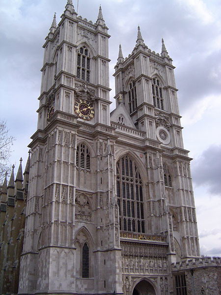
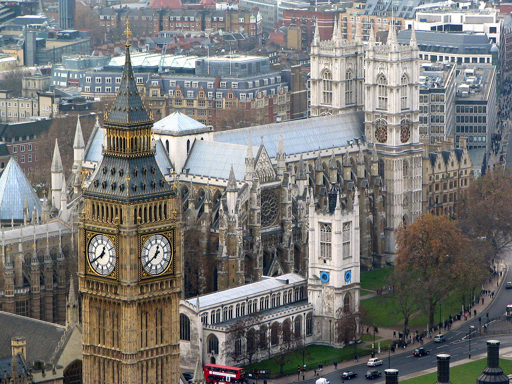

Westminster Abbey
Westminster Abbey (în română Abaţia Westminster; de fapt The Collegiate Church of St. Peter, Westminster, în română Biserică colegială Sfântul Petru, Westminster) este o biserică din Londra. Este situată în City of Westminster, la vest de Palace of Westminster. În mod tradiţional, aici sunt încoronaţi şi îngropaţi regii Angliei (mai târziu monarhi britanici). Construcţia sa a început în secolul XI. Este mormântul majorităţii regilor şi reginelor engleze, dar şi a mai multor oameni celebri. Colţul poeţilor aduce onoruri scriitorilor Regatului Unit. Aproape toate încoronările monarhilor englezi au avut loc în această abaţie. Această biserică nu trebuie să fie confundată cu catedrala romano-catolică Westminster Cathedral.
Conform legendei, un pescar numit Aldrich a avut o viziune a Sfântului Petru în apropiere de Tamisa. Între anii 960-970, Sfântul Dunstan, episcopul de Londra, a stabilit o mică abaţie benedictină în această zonă. Abaţia, dedicată Sfântului Petru, a fost reconstruită în anul 1042 de către regele Eduard Confesorul, considerat a fi adevăratul fondator al abaţiei, ce îşi dorea o biserică pentru înmormântarea sa şi a succesorilor săi. Biserica a fost sfinţită pe data de 28 decembrie 1065, la o săptămână înainte de moartea lui Eduard, dar ea a fost complet finalizată în anul 1090. Pe data de 25 decembrie 1066, aici a avut loc încoronarea lui William Cuceritorul ca rege al Angliei marcând începutul dominaţiei normande. În această perioadă numărul călugărilor din incinta abaţiei a crescut considerabil.
Construcţia actualei abaţi a început sub patronajul regelui Henric al III-lea. Cu toate acestea, biserica în stil gotic a fost finalizată abia în anul 1517. Abatele de la Westminster era unul dintre cei mai influenţi oameni din perioada Angliei medievale. Acest lucru se datora faptului că abaţia condusă de el era locul unde erau încoronaţi şi înmormântaţi monarhii, cât şi locul unde aveau loc nunţile lor sau cele ale unor nobili importanţi. De asemenea, abaţia se învecina cu Palatul Westminster, abatele având o influenţă asupra deciziilor luate acolo sau chiar intervenind în discuţi în unele cazuri. Abaţia s-a îmbogăţit nespus de mult pe urma pelerinajelor şi a darurilor. Oamenii veneau aici să se închine şi să vadă locul unde Aldrich a avut viziunea cu Sfântul Petru. Exista o tradiţie ca pescarii să vină să aducă peşte din Tamisa călugărilor de la abaţie. Se spune că abaţia era cea mai bogată din Anglia, a doua fiind Abaţia Glastonbury.
Iniţial romano-catolică, abaţia Westminster a adoptat în anul 1535 anglicanismul în urma Reformei Protestante. Atunci, călugării au fost alungaţi, abaţia desfiinţată (rămânând doar cu numele) şi veniturile ei uriaşe au fost confiscate de către stat. În anul 1540, abaţia a devenit catedrala Londrei pentru o scurtă perioadă de timp însă, până în anul 1550 când sediul episcopal s-a mutat la Saint Paul. În timpul domniei reginei Maria I (1553-1558) a avut loc o încercare de restaurare a catolicismului în Anglia în urma căreia benedictinii au fost readuşi la Westminster, până în 1559 când regina Elisabeta I îi va alunga din nou. În anul 1560, Elisabeta a acordat abaţiei titlul de biserică regală, independentă de episcopie şi supusă direct suveranului. În acelaşi timp a devenit biserică colegială fiind întemeiată aici o renumită universitate. Biserica a suferit numeroase daune în timpul Revoluţiei engleze, mai ales în anul 1640 când puritanii iconoclaşti au distrus unele dintre statuile şi mormintele regilor.
Între anii 1722-1745, arhitectul Nicholas Hawksmoor a reconstruit cele două turnuri gotice înalte de 68 de metri. Până în secolul al XIX-lea, abaţia Westminster a fost unul dintre cele trei mari centre de învăţământ britanic alături de Oxford şi Cambridge. Datorită acestui fapt la Westminster a fost tradusă în limba engleză prima treime a Vechiului Testament şi ultima jumătate a Noului Testament din celebra King James Bible. New English Bible a fost de asemenea tradusă aici. Printre cele mai importante evenimente contemporane ce au avut loc în catedrală se numără: înmormântarea prinţesei Diana pe 6 septembrie 1997, vizita Papei Benedict al XVI-lea pe 17 septembrie 2010 şi căsătoria Ducelui şi Ducesei de Cambridge pe 29 aprilie 2011.